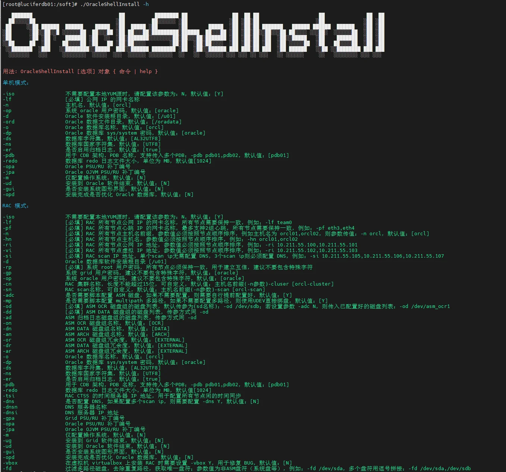
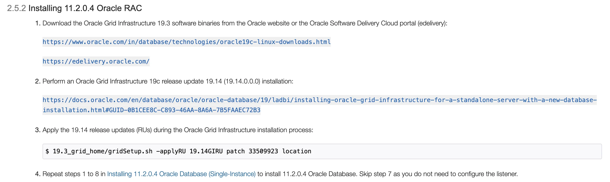

← 返回安装合集
openEuler 22.03 LTS SP3（华为欧拉）一键安装 Oracle 11GR2 单机 ASM（231017）
🚀 获取 OracleShellInstall 一键安装脚本
支持 Oracle 11gR2 ~ 26ai 全版本，覆盖 20+ 操作系统，单机 / ASM / RAC 三种模式一键部署。告别繁琐手动配置，让安装效率提升 10 倍。
前言
Oracle 一键安装脚本，演示 openEuler 22.03 LTS SP3 一键安装 Oracle 11GR2 单机 ASM（231017）过程（全程无需人工干预）：（脚本包括 ORALCE PSU/OJVM 等补丁自动安装）
脚本第三代支持 N 节点一键安装，不限制节点数！

安装准备
- 1、安装好操作系统，建议安装图形化
- 2、配置好网络
- 3、挂载本地 ISO 镜像源
- 4、上传软件安装包（安装基础包，补丁包：33991024，35574075，35685663，35940989、6880880）
- 5、上传一键安装脚本：OracleShellInstall
参考：
- Installing 11.2.0.4 Oracle RAC
- Oracle Clusterware (CRS/GI) - ASM - Database Version Compatibility (Doc ID 337737.1)
在 Oracle Linux 8 （openEuler 22.03 LTS SP3）安装 11GR2 单机 ASM 数据库，需要安装 19.14 版本之后的 Grid 软件补丁，然后再安装 11GR2 数据：

✨ 安装包下载：前往下载中心获取 Oracle 安装包
演示环境信息
📢注意：Oracle 11GR2 单机 ASM 安装主机名不能有大写字符，否则安装失败！
# 主机版本
[root@openeuler01 soft]# cat /etc/openeuler-release
openEuler release 22.03 (LTS-SP3)
# 网络信息
[root@openeuler01 soft]# ip a
2: ens33: <BROADCAST,MULTICAST,UP,LOWER_UP> mtu 1500 qdisc fq_codel state UP group default qlen 1000
link/ether 00:0c:29:51:f8:ca brd ff:ff:ff:ff:ff:ff
inet 192.168.6.130/24 brd 192.168.6.255 scope global noprefixroute ens33
valid_lft forever preferred_lft forever
inet6 fe80::6bae:9840:87e5:b777/64 scope link noprefixroute
valid_lft forever preferred_lft forever
# 挂载本地 ISO 镜像
[root@openeuler01 soft]# mount | grep iso | grep -v "/run/media"
/dev/sr0 on /mnt type iso9660 (ro,relatime,nojoliet,check=s,map=n,blocksize=2048,iocharset=utf8)
[root@openeuler01 soft]# df -h|grep /mnt
/dev/sr0 18G 18G 0 100% /mnt
# starwind 共享磁盘挂载（有存储就不需要使用 starwind，直接存储上划盘挂载就可）
yum install -y iscsi-initiator-utils*
systemctl start iscsid.service
systemctl enable iscsid.service
iscsiadm -m discovery -t st -p 192.168.6.188
## 挂载 ASM 磁盘
iscsiadm -m node -T iqn.2008-08.com.starwindsoftware:192.168.6.188-lucifer -p 192.168.6.188 -l
## 配置开机自动挂载
iscsiadm -m node -T iqn.2008-08.com.starwindsoftware:192.168.6.188-lucifer -p 192.168.6.188 --op update -n node.startup -v automatic
[root@openeuler01 ~]# lsblk
NAME MAJ:MIN RM SIZE RO TYPE MOUNTPOINTS
sda 8:0 0 100G 0 disk
├─sda1 8:1 0 1G 0 part /boot
└─sda2 8:2 0 99G 0 part
├─openeuler-root 253:0 0 91G 0 lvm /
└─openeuler-swap 253:1 0 8G 0 lvm [SWAP]
sdb 8:16 0 10G 0 disk
sdc 8:32 0 50G 0 disk
sr0 11:0 1 17.1G 0 rom /mnt
# 安装包存放在 /soft 目录下
[root@openeuler01 ~]# cd /soft/
[root@openeuler01 soft]# ll
-rwx------ 1 root root 2889184573 2月 26 13:37 LINUX.X64_193000_grid_home.zip
-rwxr-xr-x 1 root root 192199 2月 26 13:35 OracleShellInstall
-rwx------ 1 root root 1395582860 2月 26 13:36 p13390677_112040_Linux-x86-64_1of7.zip
-rwx------ 1 root root 1151304589 2月 26 13:36 p13390677_112040_Linux-x86-64_2of7.zip
-rwx------ 1 root root 8684 2月 26 13:36 p33991024_11204220118_Generic.zip
-rwx------ 1 root root 562188912 2月 26 13:36 p35574075_112040_Linux-x86-64.zip
-rwx------ 1 root root 86183099 2月 26 13:36 p35685663_112040_Linux-x86-64.zip
-rwx------ 1 root root 3153297056 2月 26 13:37 p35940989_190000_Linux-x86-64.zip
-rwx------ 1 root root 128433424 2月 26 13:36 p6880880_112000_Linux-x86-64.zip
-rwx------ 1 root root 127774864 2月 26 13:36 p6880880_190000_Linux-x86-64.zip
-rwxr-xr-x 1 root root 321590 2月 26 13:31 rlwrap-0.44.tar.gz
确保安装环境准备完成后，即可执行一键安装。
安装命令
使用标准生产环境安装参数（安装过程若失败，脚本支持重复执行安装）：
# 根据脚本 README 或者 -h 命令提示，编辑好一键安装命令，进入 /soft 目录执行安装：
./OracleShellInstall -n openeuler `# hostname prefix`\
-gp oracle `# grid password`\
-op oracle `# oracle password`\
-lf ens33 `# local ip ifname`\
-dd /dev/sdc `# rac data asm disk`\
-o lucifer `# dbname`\
-ds AL32UTF8 `# database character`\
-ns AL16UTF16 `# national character`\
-redo 100 `# redo size`\
-dp oracle `# sys/system password`\
-gpa 35940989 `# grid PSU/RU`\
-opa 35574075 `# db PSU/RU`\
-jpa 35685663 `# OJVM PSU/RU`\
-opd Y `# optimize db`\
-giv 19 `# grid version`
选择需要安装的模式以及版本，即可开始安装：
安装过程
███████ ██ ████████ ██ ██ ██ ██ ██ ██ ██
██░░░░░██ ░██ ██░░░░░░ ░██ ░██ ░██░██ ░██ ░██ ░██
██ ░░██ ██████ ██████ █████ ░██ █████ ░██ ░██ █████ ░██ ░██░██ ███████ ██████ ██████ ██████ ░██ ░██
░██ ░██░░██░░█ ░░░░░░██ ██░░░██ ░██ ██░░░██░█████████░██████ ██░░░██ ░██ ░██░██░░██░░░██ ██░░░░ ░░░██░ ░░░░░░██ ░██ ░██
░██ ░██ ░██ ░ ███████ ░██ ░░ ░██░███████░░░░░░░░██░██░░░██░███████ ░██ ░██░██ ░██ ░██░░█████ ░██ ███████ ░██ ░██
░░██ ██ ░██ ██░░░░██ ░██ ██ ░██░██░░░░ ░██░██ ░██░██░░░░ ░██ ░██░██ ░██ ░██ ░░░░░██ ░██ ██░░░░██ ░██ ░██
░░███████ ░███ ░░████████░░█████ ███░░██████ ████████ ░██ ░██░░██████ ███ ███░██ ███ ░██ ██████ ░░██ ░░████████ ███ ███
░░░░░░░ ░░░ ░░░░░░░░ ░░░░░ ░░░ ░░░░░░ ░░░░░░░░ ░░ ░░ ░░░░░░ ░░░ ░░░ ░░ ░░░ ░░ ░░░░░░ ░░ ░░░░░░░░ ░░░ ░░░
请选择安装模式 [单机(si)/单机ASM(sa)/集群(rac)] : sa
数据库安装模式: standalone
请选择数据库版本 [11/12/19/21] : 11
数据库版本: 11
OracleShellInstall 开始安装(安装过程可查看日志：/soft/print_ora_install_20240329150802.log）
正在检查操作系统是否符合安装条件......已完成 (耗时: 0 秒)
正在去除密码复杂度配置......已完成 (耗时: 0 秒)
正在配置 YUM 源......已完成 (耗时: 1 秒)
正在获取操作系统信息......已完成 (耗时: 1 秒)
正在配置 Swap......已完成 (耗时: 0 秒)
正在配置防火墙......已完成 (耗时: 3 秒)
正在配置 selinux......已完成 (耗时: 1 秒)
正在配置 nsyctl......已完成 (耗时: 1 秒)
正在安装依赖包......已完成 (耗时: 281 秒)
正在配置主机名和 /etc/hosts......已完成 (耗时: 1 秒)
正在创建用户和组......已完成 (耗时: 2 秒)
正在创建安装目录......已完成 (耗时: 1 秒)
正在配置 Avahi-daemon 服务......已完成 (耗时: 5 秒)
正在配置透明大页 && NUMA && 磁盘 IO 调度器......已完成 (耗时: 1 秒)
正在配置操作系统参数 sysctl......已完成 (耗时: 1 秒)
正在配置 RemoveIPC......已完成 (耗时: 2 秒)
正在配置用户限制 limit......已完成 (耗时: 1 秒)
正在配置 shm 目录......已完成 (耗时: 0 秒)
正在安装 rlwrap 插件......已完成 (耗时: 16 秒)
正在配置用户环境变量......已完成 (耗时: 1 秒)
正在解压 Grid 安装包以及补丁......已完成 (耗时: 185 秒)
正在解压 Oracle 安装包以及补丁......已完成 (耗时: 82 秒)
正在安装 Grid 软件以及补丁......已完成 (耗时: 1690 秒)
正在安装 Oracle 软件以及补丁......已完成 (耗时: 1419 秒)
正在创建数据库......已完成 (耗时: 955 秒)
正在优化数据库......已完成 (耗时: 27 秒)
恭喜！Oracle 单机 ASM 安装成功 (耗时: 4684 秒)，现在是否重启主机：[Y/N] Y
正在重启主机......
安装日志
[root@openeuler:/root]$ cat /soft/print_ora_install_20240329150802.log
#==============================================================#
配置本地 YUM 源
#==============================================================#
[openEuler]
name=openEuler
baseurl=file:////mnt
enabled=1
gpgcheck=1
gpgkey=file:////mnt/RPM-GPG-KEY-openEuler
#==============================================================#
获取 ASM 磁盘 UUID && 格式化磁盘头
#==============================================================#
格式化 DATA 磁盘：/dev/sdc
DATA磁盘组的磁盘UUID： 2f218dae15b551c5d
#==============================================================#
打印系统信息
#==============================================================#
服务器时间:
Fri Mar 29 03:08:08 PM CST 2024
操作系统版本:
NAME="openEuler"
VERSION="22.03 (LTS-SP3)"
ID="openEuler"
VERSION_ID="22.03"
PRETTY_NAME="openEuler 22.03 (LTS-SP3)"
ANSI_COLOR="0;31"
内核信息:
Linux version 5.10.0-182.0.0.95.oe2203sp3.x86_64 (root@dc-64g.compass-ci) (gcc_old (GCC) 10.3.1, GNU ld (GNU Binutils) 2.37) #1 SMP Sat Dec 30 13:10:36 CST 2023
服务器属性:
vmware
cpu信息:
$2型号名称 ：Intel(R) Xeon(R) CPU E5-2630 v2 @ 2.60GHz
$2物理 CPU 个数 ：8
$2每个物理 CPU 的逻辑核数 ：1
$2系统的 CPU 线程数 ：8
内存信息:
total used free shared buff/cache available
Mem: 7433 525 121 8 7103 6908
Swap: 8187 0 8187
total used free shared buff/cache available
Mem: 7.3Gi 525Mi 121Mi 8.7Mi 6.9Gi 6.7Gi
Swap: 8.0Gi 268Ki 8.0Gi
挂载信息:
/dev/mapper/openeuler-root / ext4 defaults 1 1
UUID=07e6a80f-f2f4-42f8-a1ad-df05bd354960 /boot ext4 defaults 1 2
/dev/mapper/openeuler-swap none swap defaults 0 0
目录信息:
Filesystem Size Used Avail Use% Mounted on
devtmpfs 4.0M 0 4.0M 0% /dev
tmpfs 3.7G 0 3.7G 0% /dev/shm
tmpfs 1.5G 8.8M 1.5G 1% /run
tmpfs 4.0M 0 4.0M 0% /sys/fs/cgroup
/dev/mapper/openeuler-root 90G 11G 74G 13% /
tmpfs 3.7G 0 3.7G 0% /tmp
/dev/sda1 974M 174M 733M 20% /boot
/dev/sr0 18G 18G 0 100% /mnt
#==============================================================#
禁用防火墙
#==============================================================#
○ firewalld.service - firewalld - dynamic firewall daemon
Loaded: loaded (/usr/lib/systemd/system/firewalld.service; disabled; vendor preset: enabled)
Active: inactive (dead)
Docs: man:firewalld(1)
Mar 29 14:49:36 openEuler01 systemd[1]: Starting firewalld - dynamic firewall daemon...
Mar 29 14:49:38 openEuler01 systemd[1]: Started firewalld - dynamic firewall daemon.
Mar 29 15:08:10 openEuler01 systemd[1]: Stopping firewalld - dynamic firewall daemon...
Mar 29 15:08:11 openEuler01 systemd[1]: firewalld.service: Deactivated successfully.
Mar 29 15:08:11 openEuler01 systemd[1]: Stopped firewalld - dynamic firewall daemon.
#==============================================================#
禁用 SELinux
#==============================================================#
SELinux status: enabled
SELinuxfs mount: /sys/fs/selinux
SELinux root directory: /etc/selinux
Loaded policy name: targeted
Current mode: permissive
Mode from config file: disabled
Policy MLS status: enabled
Policy deny_unknown status: allowed
Memory protection checking: actual (secure)
Max kernel policy version: 33
#==============================================================#
配置 nsysctl.conf
#==============================================================#
NOZEROCONF=yes
#==============================================================#
YUM 静默安装依赖包
#==============================================================#
bc-1.07.1-12.oe2203sp3.x86_64
binutils-2.37-24.oe2203sp3.x86_64
package compat-libcap1 is not installed
gcc-10.3.1-49.oe2203sp3.x86_64
gcc-c++-10.3.1-49.oe2203sp3.x86_64
package elfutils-libelf is not installed
package elfutils-libelf-devel is not installed
glibc-2.34-143.oe2203sp3.x86_64
glibc-devel-2.34-143.oe2203sp3.x86_64
libaio-0.3.113-9.oe2203sp3.x86_64
libaio-devel-0.3.113-9.oe2203sp3.x86_64
libgcc-10.3.1-49.oe2203sp3.x86_64
libstdc++-10.3.1-49.oe2203sp3.x86_64
libstdc++-devel-10.3.1-49.oe2203sp3.x86_64
libxcb-1.15-1.oe2203sp3.x86_64
libX11-1.7.2-8.oe2203sp3.x86_64
libXau-1.0.10-1.oe2203sp3.x86_64
libXi-1.8-2.oe2203sp3.x86_64
libXrender-0.9.10-12.oe2203sp3.x86_64
make-4.3-4.oe2203sp3.x86_64
net-tools-2.10-3.oe2203sp3.x86_64
smartmontools-7.2-2.oe2203sp3.x86_64
sysstat-12.5.4-9.oe2203sp3.x86_64
e2fsprogs-1.46.4-24.oe2203sp3.x86_64
package e2fsprogs-libs is not installed
unzip-6.0-50.oe2203sp3.x86_64
openssh-clients-8.8p1-23.oe2203sp3.x86_64
readline-8.1-3.oe2203sp3.x86_64
readline-devel-8.1-3.oe2203sp3.x86_64
psmisc-23.5-2.oe2203sp3.x86_64
ksh-2020.0.0-10.oe2203sp3.x86_64
nfs-utils-2.5.4-15.oe2203sp3.x86_64
tar-1.34-5.oe2203sp3.x86_64
package device-mapper-multipath is not installed
avahi-0.8-18.oe2203sp3.x86_64
ntp-4.2.8p15-13.oe2203sp3.x86_64
chrony-4.1-6.oe2203sp3.x86_64
libXtst-1.2.4-1.oe2203sp3.x86_64
libXrender-devel-0.9.10-12.oe2203sp3.x86_64
fontconfig-devel-2.13.94-3.oe2203sp3.x86_64
policycoreutils-3.3-8.oe2203sp3.x86_64
package policycoreutils-python is not installed
libcap-devel-2.61-6.oe2203sp3.x86_64
xorg-x11-utils-7.5-31.oe2203sp3.x86_64
xorg-x11-xauth-1.1.2-1.oe2203sp3.x86_64
glibc-compat-2.17-2.34-143.oe2203sp3.x86_64
elfutils-0.185-18.oe2203sp3.x86_64
elfutils-devel-0.185-18.oe2203sp3.x86_64
libnsl2-devel-2.0.0-5.oe2203sp3.x86_64
package librdmacm is not installed
libnsl-2.34-143.oe2203sp3.x86_64
package libibverbs is not installed
package compat-openssl10 is not installed
policycoreutils-python-utils-3.3-8.oe2203sp3.noarch
#==============================================================#
配置主机名
#==============================================================#
Static hostname: openeuler
Icon name: computer-vm
Chassis: vm
Machine ID: 141e08aec07949dbb1be4d025526e6de
Boot ID: 07e7a034d0d248988b39171ec1f10f2c
Virtualization: vmware
Operating System: openEuler 22.03 (LTS-SP3)
Kernel: Linux 5.10.0-182.0.0.95.oe2203sp3.x86_64
Architecture: x86-64
Hardware Vendor: VMware, Inc.
Hardware Model: VMware Virtual Platform
#==============================================================#
配置 /etc/hosts 文件
#==============================================================#
#==============================================================#
创建用户和组
#==============================================================#
127.0.0.1 localhost localhost.localdomain localhost4 localhost4.localdomain4
::1 localhost localhost.localdomain localhost6 localhost6.localdomain6
192.168.6.130 openeuler
oracle 用户：
uid=54321(oracle) gid=54321(oinstall) groups=54321(oinstall),54322(dba),54323(oper),54324(backupdba),54325(dgdba),54326(kmdba),54330(racdba),54327(asmdba),54328(asmoper),54329(asmadmin)
grid 用户：
uid=11012(grid) gid=54321(oinstall) groups=54321(oinstall),54322(dba),54323(oper),54324(backupdba),54325(dgdba),54326(kmdba),54330(racdba),54327(asmdba),54328(asmoper),54329(asmadmin)
#==============================================================#
配置 Avahi-daemon 服务
#==============================================================#
○ avahi-daemon.service - Avahi mDNS/DNS-SD Stack
Loaded: loaded (/usr/lib/systemd/system/avahi-daemon.service; disabled; vendor preset: enabled)
Active: inactive (dead)
TriggeredBy: ○ avahi-daemon.socket
#==============================================================#
配置透明大页 && NUMA && 磁盘 IO 调度器
#==============================================================#
args="ro resume=/dev/mapper/openeuler-swap rd.lvm.lv=openeuler/root rd.lvm.lv=openeuler/swap cgroup_disable=files apparmor=0 crashkernel=512M rhgb quiet numa=off transparent_hugepage=never elevator=deadline"
-resume=/dev/mapper/openeuler-swap
-args="ro
args="ro resume=/dev/mapper/openeuler-swap rd.lvm.lv=openeuler/root rd.lvm.lv=openeuler/swap cgroup_disable=files apparmor=0 crashkernel=512M rhgb quiet numa=off transparent_hugepage=never elevator=deadline"
-rhgb
-crashkernel=512M
#==============================================================#
配置 sysctl.conf
#==============================================================#
kernel.sysrq = 0
net.ipv4.ip_forward = 0
net.ipv4.conf.all.send_redirects = 0
net.ipv4.conf.default.send_redirects = 0
net.ipv4.conf.all.accept_source_route = 0
net.ipv4.conf.default.accept_source_route = 0
net.ipv4.conf.all.accept_redirects = 0
net.ipv4.conf.default.accept_redirects = 0
net.ipv4.conf.all.secure_redirects = 0
net.ipv4.conf.default.secure_redirects = 0
net.ipv4.icmp_echo_ignore_broadcasts = 1
net.ipv4.icmp_ignore_bogus_error_responses = 1
net.ipv4.conf.all.rp_filter = 1
net.ipv4.conf.default.rp_filter = 1
net.ipv4.tcp_syncookies = 1
kernel.dmesg_restrict = 1
net.ipv6.conf.all.accept_redirects = 0
net.ipv6.conf.default.accept_redirects = 0
fs.aio-max-nr = 1048576
fs.file-max = 6815744
kernel.shmall = 2097152
kernel.shmmax = 7795097599
kernel.shmmni = 4096
kernel.sem = 250 32000 100 128
net.ipv4.ip_local_port_range = 9000 65500
net.core.rmem_default = 262144
net.core.rmem_max = 4194304
net.core.wmem_default = 262144
net.core.wmem_max = 1048576
vm.min_free_kbytes = 30449
net.ipv4.conf.ens33.rp_filter = 1
vm.swappiness = 10
kernel.panic_on_oops = 1
kernel.randomize_va_space = 2
kernel.numa_balancing = 0
#==============================================================#
配置 RemoveIPC
#==============================================================#
[Login]
RemoveIPC=no
#==============================================================#
配置 /etc/security/limits.conf 和 /etc/pam.d/login
#==============================================================#
查看 /etc/security/limits.conf：
oracle soft nofile 1024
oracle hard nofile 65536
oracle soft stack 10240
oracle hard stack 32768
oracle soft nproc 2047
oracle hard nproc 16384
oracle hard memlock unlimited
oracle soft memlock unlimited
grid soft nofile 1024
grid hard nofile 65536
grid soft stack 10240
grid hard stack 32768
grid soft nproc 2047
grid hard nproc 16384
查看 /etc/pam.d/login 文件：
auth substack system-auth
auth include postlogin
account required pam_nologin.so
account include system-auth
password include system-auth
session required pam_selinux.so close
session required pam_loginuid.so
session required pam_selinux.so open
session required pam_namespace.so
session optional pam_keyinit.so force revoke
session include system-auth
session include postlogin
-session optional pam_ck_connector.so
session required pam_limits.so
session required /lib64/security/pam_limits.so
#==============================================================#
配置 /dev/shm
#==============================================================#
/dev/mapper/openeuler-root / ext4 defaults 1 1
UUID=07e6a80f-f2f4-42f8-a1ad-df05bd354960 /boot ext4 defaults 1 2
/dev/mapper/openeuler-swap none swap defaults 0 0
tmpfs /dev/shm tmpfs size=7612400k 0 0
#==============================================================#
安装 rlwrap 插件
#==============================================================#
成功安装 rlwrap： rlwrap 0.44
#==============================================================#
Root 用户环境变量
#==============================================================#
if [ -f ~/.bashrc ]; then
. ~/.bashrc
fi
PATH=$PATH:$HOME/bin
export PATH
alias so='su - oracle'
export PS1="[`whoami`@`hostname`:"'$PWD]$ '
alias sg='su - grid'
alias crsctl='/u01/app/19.3.0/grid/bin/crsctl'
alias srvctl='/u01/app/19.3.0/grid/bin/srvctl'
#==============================================================#
Oracle 用户环境变量，实例名：lucifer
#==============================================================#
[ -f ~/.bashrc ] && . ~/.bashrc
umask 022
export TMP=/tmp
export TMPDIR=$TMP
export NLS_LANG=AMERICAN_AMERICA.AL32UTF8
export ORACLE_BASE=/u01/app/oracle
export ORACLE_HOME=/u01/app/oracle/product/11.2.0/db
export ORACLE_TERM=xterm
export TNS_ADMIN=$ORACLE_HOME/network/admin
export LD_LIBRARY_PATH=$ORACLE_HOME/lib:/lib:/usr/lib
export ORACLE_SID=lucifer
export PATH=/usr/sbin:$PATH
export PATH=$ORACLE_HOME/bin:$ORACLE_HOME/OPatch:$ORACLE_HOME/perl/bin:$PATH
export PERL5LIB=$ORACLE_HOME/perl/lib
alias sas='sqlplus / as sysdba'
alias awr='sqlplus / as sysdba @?/rdbms/admin/awrrpt'
alias ash='sqlplus / as sysdba @?/rdbms/admin/ashrpt'
alias alert='vi $ORACLE_BASE/diag/rdbms/*/$ORACLE_SID/trace/alert_$ORACLE_SID.log'
export PS1="[`whoami`@`hostname`:"'$PWD]$ '
export CV_ASSUME_DISTID=OL7
alias sqlplus='rlwrap sqlplus'
alias rman='rlwrap rman'
alias adrci='rlwrap adrci'
#==============================================================#
Grid 用户环境变量
#==============================================================#
[ -f ~/.bashrc ] && . ~/.bashrc
umask 022
export TMP=/tmp
export TMPDIR=$TMP
export NLS_LANG=AMERICAN_AMERICA.AL32UTF8
export ORACLE_BASE=/u01/app/grid
export ORACLE_HOME=/u01/app/19.3.0/grid
export ORACLE_TERM=xterm
export TNS_ADMIN=$ORACLE_HOME/network/admin
export LD_LIBRARY_PATH=$ORACLE_HOME/lib:/lib:/usr/lib
export ORACLE_SID=+ASM
export PATH=/usr/sbin:$PATH
export PATH=$ORACLE_HOME/bin:$ORACLE_HOME/OPatch:$PATH
alias sas='sqlplus / as sysasm'
export PS1="[`whoami`@`hostname`:"'$PWD]$ '
export CV_ASSUME_DISTID=OL7
alias sqlplus='rlwrap sqlplus'
alias asmcmd='rlwrap asmcmd'
alias adrci='rlwrap adrci'
#==============================================================#
配置 multipath 多路径
#==============================================================#
#==============================================================#
配置 UDEV 绑盘
#==============================================================#
KERNEL=="dm-*",ENV{DM_UUID}=="mpath-2f218dae15b551c5d",SYMLINK+="asm_data_1",OWNER="grid",GROUP="asmadmin",MODE="0660"
mpatha (2e87e4f535c397171) dm-2 ROCKET,IMAGEFILE
size=10G features='0' hwhandler='0' wp=rw
`-+- policy='service-time 0' prio=1 status=active
`- 3:0:0:0 sdb 8:16 active ready running
asm_data_1 (2f218dae15b551c5d) dm-3 ROCKET,IMAGEFILE
size=50G features='0' hwhandler='0' wp=rw
`-+- policy='service-time 0' prio=1 status=active
`- 3:0:0:1 sdc 8:32 active ready running
UDEV 配置完成!
/dev/asm_data_1
#==============================================================#
静默解压缩 Grid 软件包
#==============================================================#
正在静默解压缩 Grid 软件包，请稍等：
静默解压 Grid 软件安装包： /soft/LINUX.X64_193000_grid_home.zip
静默解压 OPatch 软件补丁包： /soft/p6880880_190000_Linux-x86-64.zip
静默解压 Grid 软件补丁包： /soft/p35940989_190000_Linux-x86-64.zip
#==============================================================#
静默解压 Oracle 软件包
#==============================================================#
正在静默解压缩 Oracle 软件包，请稍等：
静默解压 Oracle 软件安装包： /soft/p13390677_112040_Linux-x86-64_1of7.zip,/soft/p13390677_112040_Linux-x86-64_2of7.zip
静默解压 Oracle 软件补丁包： /soft/p35574075_112040_Linux-x86-64.zip
静默解压 Oracle 软件补丁包：/soft/p33991024_11204220118_Generic.zip
静默解压 OJVM 软件补丁包： /soft/p35685663_112040_Linux-x86-64.zip
#==============================================================#
Grid 安装静默文件
#==============================================================#
INVENTORY_LOCATION=/u01/app/oraInventory
oracle.install.option=HA_CONFIG
ORACLE_BASE=/u01/app/grid
oracle.install.asm.OSDBA=asmdba
oracle.install.asm.OSOPER=asmoper
oracle.install.asm.OSASM=asmadmin
oracle.install.crs.config.gpnp.configureGNS=false
oracle.install.crs.config.useIPMI=false
oracle.install.asm.SYSASMPassword=oracle
oracle.install.asm.diskGroup.name=DATA
oracle.install.asm.diskGroup.redundancy=EXTERNAL
oracle.install.asm.diskGroup.disks=/dev/asm_data_1
oracle.install.asm.diskGroup.diskDiscoveryString=/dev/asm*
oracle.install.asm.monitorPassword=oracle
oracle.install.crs.config.ClusterConfiguration=STANDALONE
oracle.install.crs.config.configureAsExtendedCluster=false
oracle.install.crs.configureGIMR=false
oracle.install.asm.storageOption=ASM
oracle.install.asm.diskGroup.AUSize=4
oracle.install.asm.configureAFD=false
oracle.install.crs.config.ignoreDownNodes=false
oracle.install.config.managementOption=NONE
oracle.install.crs.rootconfig.executeRootScript=false
oracle.install.responseFileVersion=/oracle/install/rspfmt_crsinstall_response_schema_v19.0.0
oracle.install.crs.config.scanType=LOCAL_SCAN
#==============================================================#
静默安装 Grid 软件
#==============================================================#
Preparing the home to patch...
Applying the patch /soft/35940989...
Successfully applied the patch.
The log can be found at: /tmp/GridSetupActions2024-03-29_03-18-02PM/installerPatchActions_2024-03-29_03-18-02PM.log
Launching Oracle Grid Infrastructure Setup Wizard...
[WARNING] [INS-30011] The SYS password entered does not conform to the Oracle recommended standards.
CAUSE: Oracle recommends that the password entered should be at least 8 characters in length, contain at least 1 uppercase character, 1 lower case character and 1 digit [0-9].
ACTION: Provide a password that conforms to the Oracle recommended standards.
[WARNING] [INS-30011] The ASMSNMP password entered does not conform to the Oracle recommended standards.
CAUSE: Oracle recommends that the password entered should be at least 8 characters in length, contain at least 1 uppercase character, 1 lower case character and 1 digit [0-9].
ACTION: Provide a password that conforms to the Oracle recommended standards.
The response file for this session can be found at:
/u01/app/19.3.0/grid/install/response/grid_2024-03-29_03-18-02PM.rsp
You can find the log of this install session at:
/tmp/GridSetupActions2024-03-29_03-18-02PM/gridSetupActions2024-03-29_03-18-02PM.log
As a root user, execute the following script(s):
1. /u01/app/oraInventory/orainstRoot.sh
2. /u01/app/19.3.0/grid/root.sh
Execute /u01/app/19.3.0/grid/root.sh on the following nodes:
[openeuler]
Successfully Setup Software.
As install user, execute the following command to complete the configuration.
/u01/app/19.3.0/grid/gridSetup.sh -executeConfigTools -responseFile /soft/grid.rsp [-silent]
Moved the install session logs to:
/u01/app/oraInventory/logs/GridSetupActions2024-03-29_03-18-02PM
#==============================================================#
执行 root 脚本
#==============================================================#
Changing permissions of /u01/app/oraInventory.
Adding read,write permissions for group.
Removing read,write,execute permissions for world.
Changing groupname of /u01/app/oraInventory to oinstall.
The execution of the script is complete.
Check /u01/app/19.3.0/grid/install/root_openeuler_2024-03-29_15-42-53-525578127.log for the output of root script
#==============================================================#
Grid 软件版本
#==============================================================#
SQL*Plus: Release 19.0.0.0.0 - Production
Version 19.22.0.0.0
#==============================================================#
Grid 补丁信息
#==============================================================#
36115038;TOMCAT RELEASE UPDATE 19.0.0.0.0 (36115038)
35967489;OCW RELEASE UPDATE 19.22.0.0.0 (35967489)
35956421;ACFS RELEASE UPDATE 19.22.0.0.0 (35956421)
35943157;Database Release Update : 19.22.0.0.240116 (35943157)
33575402;DBWLM RELEASE UPDATE 19.0.0.0.0 (33575402)
OPatch succeeded.
#==============================================================#
Grid 资源检查
#==============================================================#
--------------------------------------------------------------------------------
Name Target State Server State details
--------------------------------------------------------------------------------
Local Resources
--------------------------------------------------------------------------------
ora.DATA.dg
ONLINE ONLINE openeuler STABLE
ora.LISTENER.lsnr
ONLINE ONLINE openeuler STABLE
ora.asm
ONLINE ONLINE openeuler Started,STABLE
ora.ons
OFFLINE OFFLINE openeuler STABLE
--------------------------------------------------------------------------------
Cluster Resources
--------------------------------------------------------------------------------
ora.cssd
1 ONLINE ONLINE openeuler STABLE
ora.diskmon
1 OFFLINE OFFLINE STABLE
ora.evmd
1 ONLINE ONLINE openeuler STABLE
--------------------------------------------------------------------------------
#==============================================================#
Oracle 安装静默文件
#==============================================================#
oracle.install.option=INSTALL_DB_SWONLY
UNIX_GROUP_NAME=oinstall
INVENTORY_LOCATION=/u01/app/oraInventory
ORACLE_BASE=/u01/app/oracle
oracle.install.db.InstallEdition=EE
oracle.install.db.DBA_GROUP=dba
oracle.install.db.OPER_GROUP=oper
oracle.install.responseFileVersion=/oracle/install/rspfmt_dbinstall_response_schema_v11_2_0
SELECTED_LANGUAGES=en,zh_CN
ORACLE_HOME=/u01/app/oracle/product/11.2.0/db
DECLINE_SECURITY_UPDATES=true
oracle.installer.autoupdates.option=SKIP_UPDATES
#==============================================================#
静默安装数据库软件
#==============================================================#
Starting Oracle Universal Installer...
Checking Temp space: must be greater than 120 MB. Actual 3716 MB Passed
Checking swap space: must be greater than 150 MB. Actual 8175 MB Passed
Preparing to launch Oracle Universal Installer from /tmp/OraInstall2024-03-29_03-46-17PM. Please wait ...You can find the log of this install session at:
/u01/app/oraInventory/logs/installActions2024-03-29_03-46-17PM.log
Prepare in progress.
.................................................. 9% Done.
Prepare successful.
Copy files in progress.
.................................................. 14% Done.
.................................................. 20% Done.
.................................................. 26% Done.
.................................................. 31% Done.
.................................................. 36% Done.
.................................................. 41% Done.
.................................................. 47% Done.
.................................................. 52% Done.
.................................................. 57% Done.
.................................................. 63% Done.
.................................................. 68% Done.
.................................................. 73% Done.
.................................................. 78% Done.
.................................................. 83% Done.
..............................
Copy files successful.
Link binaries in progress.
..........
Link binaries successful.
Setup files in progress.
.................................................. 88% Done.
.................................................. 94% Done.
Setup files successful.
The installation of Oracle Database 11g was successful.
Please check '/u01/app/oraInventory/logs/silentInstall2024-03-29_03-46-17PM.log' for more details.
Execute Root Scripts in progress.
As a root user, execute the following script(s):
1. /u01/app/oracle/product/11.2.0/db/root.sh
.................................................. 100% Done.
Execute Root Scripts successful.
Successfully Setup Software.
#==============================================================#
执行 root 脚本
#==============================================================#
Changing permissions of /u01/app/oraInventory.
Adding read,write permissions for group.
Removing read,write,execute permissions for world.
Changing groupname of /u01/app/oraInventory to oinstall.
The execution of the script is complete.
Check /u01/app/oracle/product/11.2.0/db/install/root_openeuler_2024-03-29_15-50-27.log for the output of root script
#==============================================================#
Oracle 软件安装补丁
#==============================================================#
Oracle Interim Patch Installer version 11.2.0.3.44
Copyright (c) 2024, Oracle Corporation. All rights reserved.
PREREQ session
Oracle Home : /u01/app/oracle/product/11.2.0/db
Central Inventory : /u01/app/oraInventory
from : /u01/app/oracle/product/11.2.0/db/oraInst.loc
OPatch version : 11.2.0.3.44
OUI version : 11.2.0.4.0
Log file location : /u01/app/oracle/product/11.2.0/db/cfgtoollogs/opatch/opatch2024-03-29_15-50-32PM_1.log
Invoking prereq "checkconflictagainstohwithdetail"
Prereq "checkConflictAgainstOHWithDetail" passed.
OPatch succeeded.
Oracle Interim Patch Installer version 11.2.0.3.44
Copyright (c) 2024, Oracle Corporation. All rights reserved.
Oracle Home : /u01/app/oracle/product/11.2.0/db
Central Inventory : /u01/app/oraInventory
from : /u01/app/oracle/product/11.2.0/db/oraInst.loc
OPatch version : 11.2.0.3.44
OUI version : 11.2.0.4.0
Log file location : /u01/app/oracle/product/11.2.0/db/cfgtoollogs/opatch/opatch2024-03-29_15-50-36PM_1.log
Verifying environment and performing prerequisite checks...
OPatch continues with these patches: 17478514 18031668 18522509 19121551 19769489 20299013 20760982 21352635 21948347 22502456 23054359 24006111 24732075 25869727 26609445 26392168 26925576 27338049 27734982 28204707 28729262 29141056 29497421 29913194 30298532 30670774 31103343 31537677 31983472 32328626 32758711 33128584 33477185 33711103 34057724 34386237 34677698 34998337 35269283 35574075
Do you want to proceed? [y|n]
Y (auto-answered by -silent)
User Responded with: Y
All checks passed.
Please shutdown Oracle instances running out of this ORACLE_HOME on the local system.
(Oracle Home = '/u01/app/oracle/product/11.2.0/db')
Is the local system ready for patching? [y|n]
Y (auto-answered by -silent)
User Responded with: Y
Backing up files...
Applying sub-patch '17478514' to OH '/u01/app/oracle/product/11.2.0/db'
Patching component oracle.rdbms, 11.2.0.4.0...
Patching component oracle.rdbms.rsf, 11.2.0.4.0...
Patching component oracle.sdo, 11.2.0.4.0...
Patching component oracle.sysman.agent, 10.2.0.4.5...
Patching component oracle.xdk, 11.2.0.4.0...
Patching component oracle.rdbms.dbscripts, 11.2.0.4.0...
Patching component oracle.sdo.locator, 11.2.0.4.0...
Patching component oracle.nlsrtl.rsf, 11.2.0.4.0...
Patching component oracle.xdk.rsf, 11.2.0.4.0...
Patching component oracle.rdbms.rman, 11.2.0.4.0...
Applying sub-patch '18031668' to OH '/u01/app/oracle/product/11.2.0/db'
Patching component oracle.rdbms, 11.2.0.4.0...
Patching component oracle.rdbms.rsf, 11.2.0.4.0...
Patching component oracle.ldap.rsf, 11.2.0.4.0...
Patching component oracle.rdbms.crs, 11.2.0.4.0...
Patching component oracle.precomp.common, 11.2.0.4.0...
Patching component oracle.ldap.rsf.ic, 11.2.0.4.0...
Patching component oracle.rdbms.deconfig, 11.2.0.4.0...
Patching component oracle.rdbms.dbscripts, 11.2.0.4.0...
Patching component oracle.rdbms.rman, 11.2.0.4.0...
Applying sub-patch '18522509' to OH '/u01/app/oracle/product/11.2.0/db'
Patching component oracle.rdbms.rsf, 11.2.0.4.0...
Patching component oracle.rdbms, 11.2.0.4.0...
Patching component oracle.precomp.common, 11.2.0.4.0...
Patching component oracle.rdbms.rman, 11.2.0.4.0...
Patching component oracle.rdbms.dbscripts, 11.2.0.4.0...
Patching component oracle.rdbms.deconfig, 11.2.0.4.0...
Applying sub-patch '19121551' to OH '/u01/app/oracle/product/11.2.0/db'
Patching component oracle.precomp.common, 11.2.0.4.0...
Patching component oracle.sysman.console.db, 11.2.0.4.0...
Patching component oracle.rdbms.rsf, 11.2.0.4.0...
Patching component oracle.rdbms.rman, 11.2.0.4.0...
Patching component oracle.rdbms, 11.2.0.4.0...
Patching component oracle.rdbms.dbscripts, 11.2.0.4.0...
Patching component oracle.ordim.client, 11.2.0.4.0...
Patching component oracle.ordim.jai, 11.2.0.4.0...
Applying sub-patch '19769489' to OH '/u01/app/oracle/product/11.2.0/db'
ApplySession: Optional component(s) [ oracle.sysman.agent, 11.2.0.4.0 ] not present in the Oracle Home or a higher version is found.
Patching component oracle.precomp.common, 11.2.0.4.0...
Patching component oracle.ovm, 11.2.0.4.0...
Patching component oracle.xdk, 11.2.0.4.0...
Patching component oracle.rdbms.util, 11.2.0.4.0...
Patching component oracle.rdbms, 11.2.0.4.0...
Patching component oracle.rdbms.dbscripts, 11.2.0.4.0...
Patching component oracle.xdk.parser.java, 11.2.0.4.0...
Patching component oracle.oraolap, 11.2.0.4.0...
Patching component oracle.rdbms.rsf, 11.2.0.4.0...
Patching component oracle.xdk.rsf, 11.2.0.4.0...
Patching component oracle.rdbms.rman, 11.2.0.4.0...
Patching component oracle.rdbms.deconfig, 11.2.0.4.0...
Applying sub-patch '20299013' to OH '/u01/app/oracle/product/11.2.0/db'
Patching component oracle.rdbms.dv, 11.2.0.4.0...
Patching component oracle.rdbms.oci, 11.2.0.4.0...
Patching component oracle.precomp.common, 11.2.0.4.0...
Patching component oracle.sysman.agent, 10.2.0.4.5...
Patching component oracle.xdk, 11.2.0.4.0...
Patching component oracle.sysman.common, 10.2.0.4.5...
Patching component oracle.rdbms, 11.2.0.4.0...
Patching component oracle.rdbms.dbscripts, 11.2.0.4.0...
Patching component oracle.xdk.parser.java, 11.2.0.4.0...
Patching component oracle.sysman.console.db, 11.2.0.4.0...
Patching component oracle.xdk.rsf, 11.2.0.4.0...
Patching component oracle.rdbms.rsf, 11.2.0.4.0...
Patching component oracle.sysman.common.core, 10.2.0.4.5...
Patching component oracle.rdbms.rman, 11.2.0.4.0...
Patching component oracle.rdbms.deconfig, 11.2.0.4.0...
Applying sub-patch '20760982' to OH '/u01/app/oracle/product/11.2.0/db'
Patching component oracle.sysman.console.db, 11.2.0.4.0...
Patching component oracle.rdbms, 11.2.0.4.0...
Patching component oracle.rdbms.dbscripts, 11.2.0.4.0...
Patching component oracle.rdbms.rsf, 11.2.0.4.0...
Applying sub-patch '21352635' to OH '/u01/app/oracle/product/11.2.0/db'
Patching component oracle.sysman.agent, 10.2.0.4.5...
Patching component oracle.rdbms.rsf, 11.2.0.4.0...
Patching component oracle.rdbms.rman, 11.2.0.4.0...
Patching component oracle.rdbms, 11.2.0.4.0...
Applying sub-patch '21948347' to OH '/u01/app/oracle/product/11.2.0/db'
ApplySession: Optional component(s) [ oracle.tfa, 11.2.0.4.0 ] not present in the Oracle Home or a higher version is found.
Patching component oracle.sysman.agent, 10.2.0.4.5...
Patching component oracle.ovm, 11.2.0.4.0...
Patching component oracle.xdk, 11.2.0.4.0...
Patching component oracle.rdbms, 11.2.0.4.0...
Patching component oracle.nlsrtl.rsf, 11.2.0.4.0...
Patching component oracle.xdk.parser.java, 11.2.0.4.0...
Patching component oracle.sysman.console.db, 11.2.0.4.0...
Patching component oracle.xdk.rsf, 11.2.0.4.0...
Patching component oracle.rdbms.rsf, 11.2.0.4.0...
Patching component oracle.sysman.oms.core, 10.2.0.4.5...
Applying sub-patch '22502456' to OH '/u01/app/oracle/product/11.2.0/db'
ApplySession: Optional component(s) [ oracle.tfa, 11.2.0.4.0 ] not present in the Oracle Home or a higher version is found.
Patching component oracle.precomp.common, 11.2.0.4.0...
Patching component oracle.oraolap.dbscripts, 11.2.0.4.0...
Patching component oracle.rdbms.olap, 11.2.0.4.0...
Patching component oracle.oraolap, 11.2.0.4.0...
Patching component oracle.rdbms.rsf, 11.2.0.4.0...
Patching component oracle.rdbms.rman, 11.2.0.4.0...
Patching component oracle.rdbms, 11.2.0.4.0...
Patching component oracle.rdbms.dbscripts, 11.2.0.4.0...
Applying sub-patch '23054359' to OH '/u01/app/oracle/product/11.2.0/db'
Patching component oracle.rdbms.dv, 11.2.0.4.0...
Patching component oracle.rdbms, 11.2.0.4.0...
Patching component oracle.rdbms.dbscripts, 11.2.0.4.0...
Patching component oracle.rdbms.rsf, 11.2.0.4.0...
Applying sub-patch '24006111' to OH '/u01/app/oracle/product/11.2.0/db'
Patching component oracle.sqlplus.ic, 11.2.0.4.0...
Patching component oracle.sqlplus, 11.2.0.4.0...
Patching component oracle.rdbms.rsf, 11.2.0.4.0...
Patching component oracle.rdbms, 11.2.0.4.0...
Patching component oracle.rdbms.dbscripts, 11.2.0.4.0...
Applying sub-patch '24732075' to OH '/u01/app/oracle/product/11.2.0/db'
Patching component oracle.precomp.common, 11.2.0.4.0...
Patching component oracle.sysman.plugin.db.main.agent, 11.2.0.4.0...
Patching component oracle.sqlplus.ic, 11.2.0.4.0...
Patching component oracle.sqlplus, 11.2.0.4.0...
Patching component oracle.rdbms.rsf, 11.2.0.4.0...
Patching component oracle.rdbms, 11.2.0.4.0...
Patching component oracle.rdbms.util, 11.2.0.4.0...
Patching component oracle.ordim.client, 11.2.0.4.0...
Patching component oracle.ordim.jai, 11.2.0.4.0...
Patching component oracle.ordim.server, 11.2.0.4.0...
Applying sub-patch '25869727' to OH '/u01/app/oracle/product/11.2.0/db'
ApplySession: Optional component(s) [ oracle.oid.client, 11.2.0.4.0 ] not present in the Oracle Home or a higher version is found.
Patching component oracle.ldap.rsf, 11.2.0.4.0...
Patching component oracle.oracore.rsf, 11.2.0.4.0...
Patching component oracle.rdbms, 11.2.0.4.0...
Patching component oracle.rdbms.rsf, 11.2.0.4.0...
Patching component oracle.rdbms.rman, 11.2.0.4.0...
Applying sub-patch '26609445' to OH '/u01/app/oracle/product/11.2.0/db'
Patching component oracle.oracore.rsf, 11.2.0.4.0...
Patching component oracle.rdbms, 11.2.0.4.0...
Applying sub-patch '26392168' to OH '/u01/app/oracle/product/11.2.0/db'
ApplySession: Optional component(s) [ oracle.oid.client, 11.2.0.4.0 ] not present in the Oracle Home or a higher version is found.
Patching component oracle.network.rsf, 11.2.0.4.0...
Patching component oracle.ldap.client, 11.2.0.4.0...
Patching component oracle.sysman.agent, 10.2.0.4.5...
Patching component oracle.xdk, 11.2.0.4.0...
Patching component oracle.rdbms, 11.2.0.4.0...
Patching component oracle.network.listener, 11.2.0.4.0...
Patching component oracle.rdbms.dbscripts, 11.2.0.4.0...
Patching component oracle.nlsrtl.rsf, 11.2.0.4.0...
Patching component oracle.xdk.parser.java, 11.2.0.4.0...
Patching component oracle.xdk.rsf, 11.2.0.4.0...
Patching component oracle.rdbms.rsf, 11.2.0.4.0...
Patching component oracle.rdbms.rman, 11.2.0.4.0...
Applying sub-patch '26925576' to OH '/u01/app/oracle/product/11.2.0/db'
Patching component oracle.rdbms, 11.2.0.4.0...
Patching component oracle.rdbms.dbscripts, 11.2.0.4.0...
Patching component oracle.rdbms.rman, 11.2.0.4.0...
Patching component oracle.rdbms.rsf, 11.2.0.4.0...
Applying sub-patch '27338049' to OH '/u01/app/oracle/product/11.2.0/db'
Patching component oracle.assistants.server, 11.2.0.4.0...
Patching component oracle.rdbms.rsf, 11.2.0.4.0...
Patching component oracle.rdbms, 11.2.0.4.0...
Patching component oracle.rdbms.rman, 11.2.0.4.0...
Patching component oracle.rdbms.dbscripts, 11.2.0.4.0...
Applying sub-patch '27734982' to OH '/u01/app/oracle/product/11.2.0/db'
Patching component oracle.ctx, 11.2.0.4.0...
Patching component oracle.rdbms.rsf, 11.2.0.4.0...
Patching component oracle.ctx.rsf, 11.2.0.4.0...
Patching component oracle.rdbms, 11.2.0.4.0...
Patching component oracle.rdbms.rman, 11.2.0.4.0...
Applying sub-patch '28204707' to OH '/u01/app/oracle/product/11.2.0/db'
Applying changes to emctl script on the home: /u01/app/oracle/product/11.2.0/db ...
Patching component oracle.rdbms, 11.2.0.4.0...
Patching component oracle.oracore.rsf, 11.2.0.4.0...
Patching component oracle.rdbms.rsf, 11.2.0.4.0...
Patching component oracle.ldap.rsf, 11.2.0.4.0...
Patching component oracle.ldap.rsf.ic, 11.2.0.4.0...
Patching component oracle.network.rsf, 11.2.0.4.0...
Patching component oracle.sysman.agent, 10.2.0.4.5...
Patching component oracle.sysman.console.db, 11.2.0.4.0...
Patching component oracle.ldap.security.osdt, 11.2.0.4.0...
Patching component oracle.ldap.owm, 11.2.0.4.0...
Patching component oracle.sqlplus.rsf, 11.2.0.4.0...
Patching component oracle.ctx, 11.2.0.4.0...
Applying sub-patch '28729262' to OH '/u01/app/oracle/product/11.2.0/db'
INFO: Script isn't applicable to this port!
Patching component oracle.rdbms, 11.2.0.4.0...
Patching component oracle.rdbms.rsf, 11.2.0.4.0...
Patching component oracle.rdbms.util, 11.2.0.4.0...
Patching component oracle.ldap.rsf, 11.2.0.4.0...
Patching component oracle.ldap.rsf.ic, 11.2.0.4.0...
Patching component oracle.network.rsf, 11.2.0.4.0...
Patching component oracle.rdbms.rman, 11.2.0.4.0...
Patching component oracle.ctx, 11.2.0.4.0...
Applying sub-patch '29141056' to OH '/u01/app/oracle/product/11.2.0/db'
Patching component oracle.rdbms, 11.2.0.4.0...
Patching component oracle.rdbms.rman, 11.2.0.4.0...
Patching component oracle.oracore.rsf, 11.2.0.4.0...
Patching component oracle.rdbms.dbscripts, 11.2.0.4.0...
Patching component oracle.rdbms.rsf, 11.2.0.4.0...
Applying sub-patch '29497421' to OH '/u01/app/oracle/product/11.2.0/db'
Patching component oracle.rdbms, 11.2.0.4.0...
Patching component oracle.rdbms.dbscripts, 11.2.0.4.0...
Patching component oracle.rdbms.rman, 11.2.0.4.0...
Patching component oracle.rdbms.rsf, 11.2.0.4.0...
Patching component oracle.ldap.rsf, 11.2.0.4.0...
Patching component oracle.ldap.rsf.ic, 11.2.0.4.0...
Patching component oracle.oracore.rsf, 11.2.0.4.0...
Patching component oracle.ctx, 11.2.0.4.0...
Applying sub-patch '29913194' to OH '/u01/app/oracle/product/11.2.0/db'
Patching component oracle.rdbms, 11.2.0.4.0...
Patching component oracle.rdbms.dbscripts, 11.2.0.4.0...
Patching component oracle.rdbms.rsf, 11.2.0.4.0...
Patching component oracle.network.rsf, 11.2.0.4.0...
Patching component oracle.ldap.rsf, 11.2.0.4.0...
Patching component oracle.ldap.rsf.ic, 11.2.0.4.0...
Patching component oracle.rdbms.util, 11.2.0.4.0...
Applying sub-patch '30298532' to OH '/u01/app/oracle/product/11.2.0/db'
ApplySession: Optional component(s) [ oracle.rdbms.tg4tera, 11.2.0.4.0 ] , [ oracle.rdbms.tg4sybs, 11.2.0.4.0 ] , [ oracle.rdbms.tg4ifmx, 11.2.0.4.0 ] , [ oracle.rdbms.tg4db2, 11.2.0.4.0 ] , [ oracle.rdbms.tg4msql, 11.2.0.4.0 ] not present in the Oracle Home or a higher version is found.
Patching component oracle.rdbms.rsf, 11.2.0.4.0...
Patching component oracle.rdbms, 11.2.0.4.0...
Patching component oracle.rdbms.dbscripts, 11.2.0.4.0...
Patching component oracle.rdbms.hsodbc, 11.2.0.4.0...
Patching component oracle.ldap.rsf, 11.2.0.4.0...
Patching component oracle.ldap.rsf.ic, 11.2.0.4.0...
Applying sub-patch '30670774' to OH '/u01/app/oracle/product/11.2.0/db'
Patching component oracle.rdbms.rsf, 11.2.0.4.0...
Patching component oracle.rdbms, 11.2.0.4.0...
Patching component oracle.rdbms.dbscripts, 11.2.0.4.0...
Patching component oracle.network.rsf, 11.2.0.4.0...
Patching component oracle.ldap.rsf, 11.2.0.4.0...
Patching component oracle.ldap.rsf.ic, 11.2.0.4.0...
Patching component oracle.swd.oui, 11.2.0.4.0...
Patching component oracle.ctx, 11.2.0.4.0...
Applying sub-patch '31103343' to OH '/u01/app/oracle/product/11.2.0/db'
Patching component oracle.rdbms, 11.2.0.4.0...
Patching component oracle.rdbms.dbscripts, 11.2.0.4.0...
Patching component oracle.rdbms.rsf, 11.2.0.4.0...
Applying sub-patch '31537677' to OH '/u01/app/oracle/product/11.2.0/db'
Patching component oracle.rdbms, 11.2.0.4.0...
Patching component oracle.rdbms.dbscripts, 11.2.0.4.0...
Patching component oracle.rdbms.rsf, 11.2.0.4.0...
Patching component oracle.rdbms.dv, 11.2.0.4.0...
Patching component oracle.rdbms.rman, 11.2.0.4.0...
Patching component oracle.ldap.rsf, 11.2.0.4.0...
Patching component oracle.ldap.rsf.ic, 11.2.0.4.0...
Patching component oracle.oracore.rsf, 11.2.0.4.0...
Patching component oracle.rdbms.util, 11.2.0.4.0...
Patching component oracle.dbdev, 11.2.0.4.0...
Patching component oracle.ctx, 11.2.0.4.0...
Patching component oracle.buildtools.rsf, 11.2.0.4.0...
Applying sub-patch '31983472' to OH '/u01/app/oracle/product/11.2.0/db'
Patching component oracle.rdbms.rsf, 11.2.0.4.0...
Patching component oracle.rdbms, 11.2.0.4.0...
Patching component oracle.ctx, 11.2.0.4.0...
Applying sub-patch '32328626' to OH '/u01/app/oracle/product/11.2.0/db'
Patching component oracle.rdbms, 11.2.0.4.0...
Patching component oracle.rdbms.dbscripts, 11.2.0.4.0...
Patching component oracle.rdbms.rsf, 11.2.0.4.0...
Patching component oracle.rdbms.dv, 11.2.0.4.0...
Patching component oracle.rdbms.rman, 11.2.0.4.0...
Patching component oracle.ldap.rsf, 11.2.0.4.0...
Patching component oracle.ldap.rsf.ic, 11.2.0.4.0...
Applying sub-patch '32758711' to OH '/u01/app/oracle/product/11.2.0/db'
Patching component oracle.rdbms, 11.2.0.4.0...
Patching component oracle.rdbms.dbscripts, 11.2.0.4.0...
Patching component oracle.ctx, 11.2.0.4.0...
Patching component oracle.network.rsf, 11.2.0.4.0...
Applying sub-patch '33128584' to OH '/u01/app/oracle/product/11.2.0/db'
Patching component oracle.rdbms, 11.2.0.4.0...
Patching component oracle.rdbms.rsf, 11.2.0.4.0...
Patching component oracle.ctx, 11.2.0.4.0...
Applying sub-patch '33477185' to OH '/u01/app/oracle/product/11.2.0/db'
Patching component oracle.rdbms, 11.2.0.4.0...
Patching component oracle.rdbms.dbscripts, 11.2.0.4.0...
Patching component oracle.rdbms.rsf, 11.2.0.4.0...
Patching component oracle.network.rsf, 11.2.0.4.0...
Patching component oracle.rdbms.dv, 11.2.0.4.0...
Applying sub-patch '33711103' to OH '/u01/app/oracle/product/11.2.0/db'
ApplySession: Optional component(s) [ oracle.rdbms.tg4tera, 11.2.0.4.0 ] , [ oracle.rdbms.tg4sybs, 11.2.0.4.0 ] , [ oracle.rdbms.tg4msql, 11.2.0.4.0 ] , [ oracle.rdbms.tg4ifmx, 11.2.0.4.0 ] , [ oracle.rdbms.tg4db2, 11.2.0.4.0 ] not present in the Oracle Home or a higher version is found.
Patching component oracle.rdbms.rsf, 11.2.0.4.0...
Patching component oracle.rdbms, 11.2.0.4.0...
Patching component oracle.rdbms.rsf, 11.2.0.4.0...
Patching component oracle.network.rsf, 11.2.0.4.0...
Patching component oracle.rdbms.hsodbc, 11.2.0.4.0...
Patching component oracle.rdbms.hs_common, 11.2.0.4.0...
Patching component oracle.buildtools.rsf, 11.2.0.4.0...
Patching component oracle.buildtools.rsf, 11.2.0.4.0...
Applying sub-patch '34057724' to OH '/u01/app/oracle/product/11.2.0/db'
ApplySession: Optional component(s) [ oracle.network.cman, 11.2.0.4.0 ] not present in the Oracle Home or a higher version is found.
Patching component oracle.rdbms, 11.2.0.4.0...
Patching component oracle.rdbms.dbscripts, 11.2.0.4.0...
Patching component oracle.rdbms.rsf, 11.2.0.4.0...
Patching component oracle.network.rsf, 11.2.0.4.0...
Patching component oracle.ldap.rsf, 11.2.0.4.0...
Patching component oracle.ldap.rsf.ic, 11.2.0.4.0...
Patching component oracle.swd.oui.core, 11.2.0.4.0...
Applying sub-patch '34386237' to OH '/u01/app/oracle/product/11.2.0/db'
ApplySession: Optional component(s) [ oracle.network.cman, 11.2.0.4.0 ] not present in the Oracle Home or a higher version is found.
Patching component oracle.rdbms, 11.2.0.4.0...
Patching component oracle.rdbms.rsf, 11.2.0.4.0...
Patching component oracle.network.rsf, 11.2.0.4.0...
Patching component oracle.swd.oui.core, 11.2.0.4.0...
Patching component oracle.ctx, 11.2.0.4.0...
Applying sub-patch '34677698' to OH '/u01/app/oracle/product/11.2.0/db'
ApplySession: Optional component(s) [ oracle.network.cman, 11.2.0.4.0 ] not present in the Oracle Home or a higher version is found.
Patching component oracle.rdbms, 11.2.0.4.0...
Patching component oracle.rdbms.rsf, 11.2.0.4.0...
Patching component oracle.javavm.containers, 11.2.0.4.0...
Applying sub-patch '34998337' to OH '/u01/app/oracle/product/11.2.0/db'
ApplySession: Optional component(s) [ oracle.network.cman, 11.2.0.4.0 ] not present in the Oracle Home or a higher version is found.
Patching component oracle.rdbms, 11.2.0.4.0...
Patching component oracle.rdbms.rsf, 11.2.0.4.0...
Applying sub-patch '35269283' to OH '/u01/app/oracle/product/11.2.0/db'
ApplySession: Optional component(s) [ oracle.network.cman, 11.2.0.4.0 ] not present in the Oracle Home or a higher version is found.
Patching component oracle.rdbms, 11.2.0.4.0...
Patching component oracle.network.rsf, 11.2.0.4.0...
Patching component oracle.rdbms.rsf, 11.2.0.4.0...
Patching component oracle.dbdev, 11.2.0.4.0...
Applying sub-patch '35574075' to OH '/u01/app/oracle/product/11.2.0/db'
ApplySession: Optional component(s) [ oracle.network.cman, 11.2.0.4.0 ] not present in the Oracle Home or a higher version is found.
Patching component oracle.rdbms, 11.2.0.4.0...
Patching component oracle.rdbms.rsf, 11.2.0.4.0...
Patching component oracle.rdbms.dbscripts, 11.2.0.4.0...
Patching component oracle.network.rsf, 11.2.0.4.0...
Patching component oracle.rdbms.rsf, 11.2.0.4.0...
Patching component oracle.sysman.oms.core, 10.2.0.4.5...
Patching component oracle.marvel, 11.2.0.4.0...
Patching component oracle.javavm.containers, 11.2.0.4.0...
Patching component oracle.dbjava.ucp, 11.2.0.4.0...
Patching component oracle.owb.rsf, 11.2.0.4.0...
Patching component oracle.sysman.ccr, 10.3.8.1.0...
Patching component oracle.sysman.ccr.client, 10.3.2.1.0...
Patching component oracle.sysman.common, 10.2.0.4.5...
Patching component oracle.rdbms.dbscripts, 11.2.0.4.0...
Patching component oracle.javavm.containers, 11.2.0.4.0...
Composite patch 35574075 successfully applied.
Log file location: /u01/app/oracle/product/11.2.0/db/cfgtoollogs/opatch/opatch2024-03-29_15-50-36PM_1.log
OPatch succeeded.
#==============================================================#
Oracle 软件安装补丁 33991024
#==============================================================#
Oracle Interim Patch Installer version 11.2.0.3.44
Copyright (c) 2024, Oracle Corporation. All rights reserved.
PREREQ session
Oracle Home : /u01/app/oracle/product/11.2.0/db
Central Inventory : /u01/app/oraInventory
from : /u01/app/oracle/product/11.2.0/db/oraInst.loc
OPatch version : 11.2.0.3.44
OUI version : 11.2.0.4.0
Log file location : /u01/app/oracle/product/11.2.0/db/cfgtoollogs/opatch/opatch2024-03-29_16-06-56PM_1.log
Invoking prereq "checkconflictagainstohwithdetail"
Prereq "checkConflictAgainstOHWithDetail" passed.
OPatch succeeded.
Oracle Interim Patch Installer version 11.2.0.3.44
Copyright (c) 2024, Oracle Corporation. All rights reserved.
Oracle Home : /u01/app/oracle/product/11.2.0/db
Central Inventory : /u01/app/oraInventory
from : /u01/app/oracle/product/11.2.0/db/oraInst.loc
OPatch version : 11.2.0.3.44
OUI version : 11.2.0.4.0
Log file location : /u01/app/oracle/product/11.2.0/db/cfgtoollogs/opatch/opatch2024-03-29_16-06-59PM_1.log
Verifying environment and performing prerequisite checks...
OPatch continues with these patches: 33991024
Do you want to proceed? [y|n]
Y (auto-answered by -silent)
User Responded with: Y
All checks passed.
Please shutdown Oracle instances running out of this ORACLE_HOME on the local system.
(Oracle Home = '/u01/app/oracle/product/11.2.0/db')
Is the local system ready for patching? [y|n]
Y (auto-answered by -silent)
User Responded with: Y
Backing up files...
Applying interim patch '33991024' to OH '/u01/app/oracle/product/11.2.0/db'
Patching component oracle.rdbms.rsf, 11.2.0.4.0...
Patching component oracle.buildtools.rsf, 11.2.0.4.0...
Patching component oracle.has.db, 11.2.0.4.0...
Patch 33991024 successfully applied.
Log file location: /u01/app/oracle/product/11.2.0/db/cfgtoollogs/opatch/opatch2024-03-29_16-06-59PM_1.log
OPatch succeeded.
Oracle 执行 relink：
writing relink log to: /u01/app/oracle/product/11.2.0/db/install/relink.log
#==============================================================#
OJVM 补丁安装
#==============================================================#
Oracle Interim Patch Installer version 11.2.0.3.44
Copyright (c) 2024, Oracle Corporation. All rights reserved.
PREREQ session
Oracle Home : /u01/app/oracle/product/11.2.0/db
Central Inventory : /u01/app/oraInventory
from : /u01/app/oracle/product/11.2.0/db/oraInst.loc
OPatch version : 11.2.0.3.44
OUI version : 11.2.0.4.0
Log file location : /u01/app/oracle/product/11.2.0/db/cfgtoollogs/opatch/opatch2024-03-29_16-09-01PM_1.log
Invoking prereq "checkconflictagainstohwithdetail"
Prereq "checkConflictAgainstOHWithDetail" passed.
OPatch succeeded.
Oracle Interim Patch Installer version 11.2.0.3.44
Copyright (c) 2024, Oracle Corporation. All rights reserved.
Oracle Home : /u01/app/oracle/product/11.2.0/db
Central Inventory : /u01/app/oraInventory
from : /u01/app/oracle/product/11.2.0/db/oraInst.loc
OPatch version : 11.2.0.3.44
OUI version : 11.2.0.4.0
Log file location : /u01/app/oracle/product/11.2.0/db/cfgtoollogs/opatch/opatch2024-03-29_16-09-04PM_1.log
Verifying environment and performing prerequisite checks...
OPatch continues with these patches: 35685663
Do you want to proceed? [y|n]
Y (auto-answered by -silent)
User Responded with: Y
All checks passed.
Please shutdown Oracle instances running out of this ORACLE_HOME on the local system.
(Oracle Home = '/u01/app/oracle/product/11.2.0/db')
Is the local system ready for patching? [y|n]
Y (auto-answered by -silent)
User Responded with: Y
Backing up files...
Applying interim patch '35685663' to OH '/u01/app/oracle/product/11.2.0/db'
ApplySession: Optional component(s) [ oracle.sqlj, 11.2.0.4.0 ] , [ oracle.sqlj.companion, 11.2.0.4.0 ] not present in the Oracle Home or a higher version is found.
Patching component oracle.javavm.server, 11.2.0.4.0...
Patching component oracle.precomp.common, 11.2.0.4.0...
Patching component oracle.rdbms, 11.2.0.4.0...
Patching component oracle.rdbms.dbscripts, 11.2.0.4.0...
Patching component oracle.javavm.client, 11.2.0.4.0...
Patching component oracle.dbjava.jdbc, 11.2.0.4.0...
Patching component oracle.dbjava.ic, 11.2.0.4.0...
Patch 35685663 successfully applied.
Log file location: /u01/app/oracle/product/11.2.0/db/cfgtoollogs/opatch/opatch2024-03-29_16-09-04PM_1.log
OPatch succeeded.
#==============================================================#
Oracle 软件版本
#==============================================================#
SQL*Plus: Release 11.2.0.4.0 Production
#==============================================================#
Oracle 补丁信息
#==============================================================#
35685663;OJVM PATCH SET UPDATE 11.2.0.4.231017
33991024;11204CERT ON OL8: LINKING ERRORS DURING 11204 FOR DB INSTALL ON OL8.2
35574075;Database Patch Set Update : 11.2.0.4.231017 (35574075)
OPatch succeeded.
#==============================================================#
静默建库命令：lucifer
#==============================================================#
dbca -silent -createDatabase \
-templateName General_Purpose.dbc \
-responseFile NO_VALUE \
-gdbname lucifer \
-sid lucifer \
-sysPassword oracle \
-systemPassword oracle \
-redoLogFileSize 100 \
-diskGroupName DATA \
-storageType ASM \
-characterSet AL32UTF8 \
-nationalCharacterSet AL16UTF16 \
-emConfiguration NONE \
-automaticMemoryManagement false \
-totalMemory 3716 \
-databaseType OLTP
#==============================================================#
创建数据库实例：lucifer
#==============================================================#
Copying database files
1% complete
3% complete
10% complete
17% complete
24% complete
31% complete
35% complete
Creating and starting Oracle instance
37% complete
42% complete
47% complete
52% complete
53% complete
56% complete
58% complete
Registering database with Oracle Restart
64% complete
Completing Database Creation
68% complete
71% complete
75% complete
76% complete
77% complete
78% complete
79% complete
80% complete
81% complete
82% complete
92% complete
100% complete
Look at the log file "/u01/app/oracle/cfgtoollogs/dbca/lucifer/lucifer.log" for further details.
#==============================================================#
配置 OMF && 优化 RMAN
#==============================================================#
Recovery Manager: Release 11.2.0.4.0 - Production on Fri Mar 29 16:25:42 2024
Copyright (c) 1982, 2011, Oracle and/or its affiliates. All rights reserved.
connected to target database: LUCIFER (DBID=4020786356)
RMAN>
using target database control file instead of recovery catalog
new RMAN configuration parameters:
CONFIGURE SNAPSHOT CONTROLFILE NAME TO '+DATA/snapcf_fdcdb1.f';
new RMAN configuration parameters are successfully stored
RMAN>
RMAN configuration parameters for database with db_unique_name LUCIFER are:
CONFIGURE SNAPSHOT CONTROLFILE NAME TO '+DATA/snapcf_fdcdb1.f';
RMAN>
Recovery Manager complete.
NAME TYPE VALUE
------------------------------------ ----------- ------------------------------
db_create_file_dest string +DATA
#==============================================================#
配置 Oracle 数据库控制文件复用
#==============================================================#
数据库控制文件：
NAME
----------------------------------------------------------------------------------------------------
+DATA/lucifer/controlfile/current.262.1164903093
+DATA/lucifer/controlfile/current.261.1164903093
#==============================================================#
配置在线重做日志
#==============================================================#
数据库在线重做日志文件：
THREAD# GROUP# MEMBER size(M)
---------- ---------- ------------------------------------------------------------------------------------------------------------------------ ----------
1 1 +DATA/lucifer/onlinelog/group_1.263.1164903097 100
1 1 +DATA/lucifer/onlinelog/group_1.264.1164903103 100
1 2 +DATA/lucifer/onlinelog/group_2.265.1164903105 100
1 2 +DATA/lucifer/onlinelog/group_2.266.1164903107 100
1 3 +DATA/lucifer/onlinelog/group_3.267.1164903109 100
1 3 +DATA/lucifer/onlinelog/group_3.268.1164903111 100
1 11 +DATA/lucifer/onlinelog/group_11.271.1164903945 100
1 11 +DATA/lucifer/onlinelog/group_11.272.1164903949 100
1 12 +DATA/lucifer/onlinelog/group_12.273.1164903951 100
1 12 +DATA/lucifer/onlinelog/group_12.274.1164903953 100
1 13 +DATA/lucifer/onlinelog/group_13.275.1164903957 100
1 13 +DATA/lucifer/onlinelog/group_13.276.1164903957 100
1 14 +DATA/lucifer/onlinelog/group_14.277.1164903961 100
1 14 +DATA/lucifer/onlinelog/group_14.278.1164903963 100
1 15 +DATA/lucifer/onlinelog/group_15.279.1164903963 100
1 15 +DATA/lucifer/onlinelog/group_15.280.1164903965 100
#==============================================================#
配置 Oracle 数据库开机自启
#==============================================================#
#==============================================================#
配置 RMAN 备份任务
#==============================================================#
## OracleBegin
00 02 * * * /home/oracle/scripts/del_arch_lucifer.sh
#00 00 * * 0 /home/oracle/scripts/dbbackup_lv0_lucifer.sh
#00 00 * * 1,2,3,4,5,6 /home/oracle/scripts/dbbackup_lv1_lucifer.sh
#==============================================================#
优化数据库参数
#==============================================================#
数据库参数：
NAME SID SPVALUE VALUE
-------------------------------------------------- ---------- -------------------------------------------------------------------------------- --------------------------------------------------------------------------------
_b_tree_bitmap_plans * FALSE FALSE
_datafile_write_errors_crash_instance * FALSE FALSE
audit_file_dest * /u01/app/oracle/admin/lucifer/adump /u01/app/oracle/admin/lucifer/adump
audit_trail * NONE DB
compatible * 11.2.0.4.0 11.2.0.4.0
control_file_record_keep_time * 31 31
db_block_size * 8192 8192
db_create_file_dest * +DATA +DATA
db_file_multiblock_read_count * 128
db_files * 5000 200
db_name * lucifer lucifer
db_recovery_file_dest * +DATA +DATA
db_recovery_file_dest_size * 4857004032 4857004032
db_writer_processes * 1
deferred_segment_creation * FALSE FALSE
diagnostic_dest * /u01/app/oracle /u01/app/oracle
dispatchers * (PROTOCOL=TCP) (SERVICE=luciferXDB) (PROTOCOL=TCP) (SERVICE=luciferXDB)
enable_ddl_logging * TRUE FALSE
event * 10949 trace name context forever,level 1
event * 28401 trace name context forever,level 1
fast_start_parallel_rollback * LOW
log_archive_dest_1 * location=+DATA location=+DATA
log_archive_format * %t_%s_%r.dbf %t_%s_%r.dbf
max_dump_file_size * unlimited
open_cursors * 1000 300
optimizer_index_caching * 0
optimizer_mode * ALL_ROWS
parallel_force_local * FALSE
parallel_max_servers * 64 64
pga_aggregate_target * 1246756864 779091968
processes * 2000 150
remote_login_passwordfile * EXCLUSIVE EXCLUSIVE
resource_limit * TRUE FALSE
resource_manager_plan * force:
sec_case_sensitive_logon * FALSE TRUE
session_cached_cursors * 300 50
sessions * 248
sga_max_size * 4988076032 3120562176
sga_target * 4988076032 3120562176
spfile * +DATA/lucifer/spfilelucifer.ora
statistics_level * TYPICAL
undo_retention * 10800 900
#==============================================================#
配置 glogin.sql
#==============================================================#
define _editor=vi
set serveroutput on size 1000000
set pagesize 9999
set long 99999
set trimspool on
col name format a80
set termout off
define gname=idle
column global_name new_value gname
select lower(user) || '@' || substr( global_name, 1, decode( dot, 0, length(global_name), dot-1) ) global_name from (select global_name, instr(global_name,'.') dot from global_name );
ALTER SESSION SET nls_date_format = 'YYYY-MM-DD HH24:MI:SS';
set sqlprompt '&gname _DATE> '
set termout on